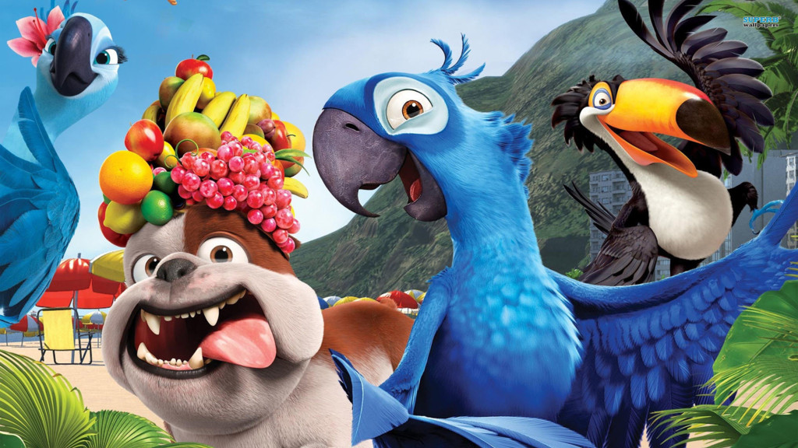

Proyecto idiomas:
Alumnos del IRESM analizan la cultura de Brasil a través de la película: RÍO
Alumnos de la orientación en economía, en la asignatura de Portugués, analizaron la cultura de Brasil mediante una colorida película.
Hoy en día, es muy importante conocer las culturas del mundo, sobre todo porque vivimos en una sociedad globalizada. Pero, claro, esto se puede volver bastante tedioso para un grupo de adolescentes. Es por esto que la profesora de Portugués de la institución, decidió presentar las raíces del país vecino mediante un filme bastante entretenido.
Luego de ver la película, los chicos lograron realizar un trabajo de comprensión y redacción, y así pudieron crear el proyecto: Conhecendo o Brasil com Rio. Un trabajo que se compone tanto de textos escritos como de audios y grabaciones, lo que demuestra el gran nivel de nuestros alumnos para entender lenguas extranjeras y aplicarlas.
Sin dudas, el aprendizaje de culturas y lenguas de otros países es sumamente importante en la actualidad, ya que este nos abrirá puertas a muchas oportunidades, que nos permitirán crecer en la vida. ¡Felicitamos a los estudiantes de 5A por tan buen trabajo y desempeño!
